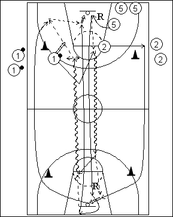

Catégorie : FASTBREAK (Fb-003)
Déroulement
- Une file de meneurs (1) avec ballons. Un file d’ailiers (2). Une file de pivots (5)
- Le premier joueur de la file 1 shoote et se démarque à la ligne de lancers-francs pour demander la première passe (« Ball »). Durant ce temps, le premier joueur de la file 2 écarte pour également appeler le ballon (« Out »). Le premier 5 effectue le rebond et passe à 1 qui dribble vers l’anneau adverse et passe à 2 pour un lay-up. 5 suit en trailer et effectue le rebond et à nouveau la première passe à 1, tandis que 2 repart sur l’aile du côté opposé.
- Au retour, passe de 1 à 2 qui joue avec le trailer.
- Chaque joueur retourne à son emplacement de départ.
Coaching points
- Après chaque passe à l’ailier, le meneur se déplace du côté qui entre dans la conception du Coach (vers la passe ou à l’opposé).
- Le Coach peut aussi demander la première passe à 2 avec ensuite passe à 1 ou dribble dans le centre de 2.
- Travailler à gauche et à droite.
- Avec les jeunes, tout le monde travaille aux 3 postes.